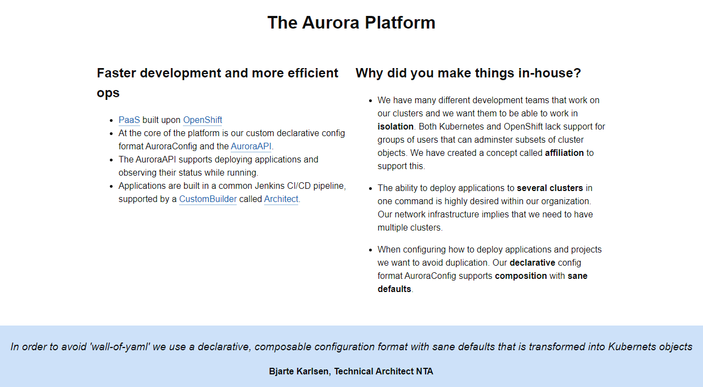
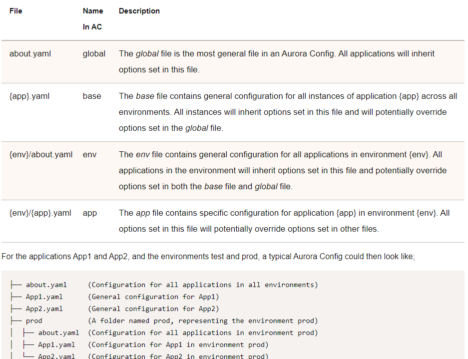
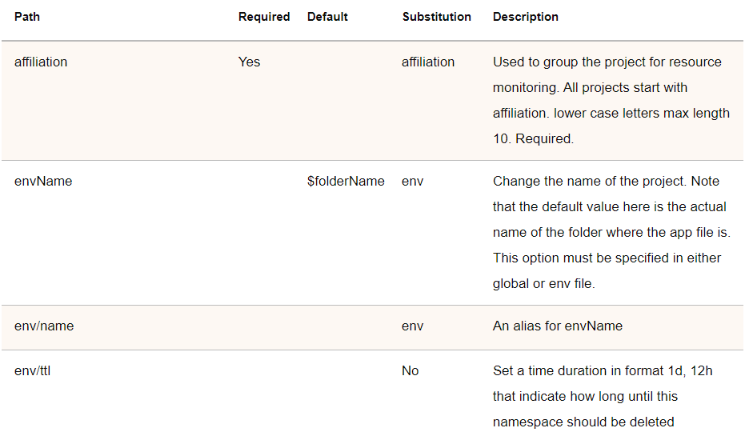
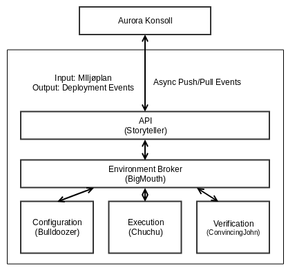

Agenda
- Who are we?
- Introduction
- Aurora Platform
- Why Kotlin?
- Storyteller
- Coroutines and WebFlux
- Kotlin-gradle
- DSLs
Who are we?
- Work for Systek
- Consultancy based in Oslo
- About 60 employees
- Consultant at the Norwegian Tax Administration (NTA)
- Organizers of the Oslo Kotlin Meetup
Jarle Hansen
Anders Mikkelsen
Introduction
What's covered in this talk?
- NTAs experience using Kotlin
- Brief intro to use cases
- Many different Kotlin-related subjects
- Contact us after talk for more details
Norwegian Tax Administration
- ~6500 employees - ~500 developers
- Tax calculation and enforcement
- National registry (All residents of Norway, current and former)
User base
- 4.9 million norwegians as of 2018, of 5.3 total
- Integrations with most other public services
- Integration with any company interfacing with the national registry
Aurora Platform
PaaS
- Based on OpenShift
- Custom configuration and tooling
- Built with Kotlin and kotlin-gradle
PaaS
- Services named after characters from Fraggle Rock
 |
|||
| Boober | Gobo | Mean Genie | Mokey |
Aurora github io
Custom config
Custom config
Open source
https://github.com/Skatteetaten
Why Kotlin?
Developer satisfaction
- Dataclasses, named and default arguments
- Collection api
- Extension functions
- NULL safety operator
- when, case on speed
- Reified types
- Coroutines
NTA satisfaction
- Testing
- Scripting
- DSL
Lessons learned
- Kotlin creates great developer satisfaction
- Features such as extension functions and null safety helps us avoid bugs/mistakes by modifying poor API's
- Certain libraries do not integrate with coroutines, in not so obvious ways
- Thread.local (used by Spring security, log4j etc.) does not work well with coroutines
- Kotlin gradle has unpredictable syntax and can be slow
Storyteller
Storyteller
Storyteller is an internal service, that provides automated creation and destruction of environments across the various infrastructures of the NTA
NTA fun facts
- OpenShift / VMWare
- ~6500 VM's
- 944 pods in production, ~5500 overall
- Number of pods increase by 50% each year
- ~500 microservices in production for main services
- Deploys so far this year: 139 659 (September)
Overview
- An environment is a collection of so-called segments, an organizational unit in the NTA
- A standard general purpose testing environment usually consists of:
- 100's of Cores
- 1000's of GB RAM
- X amounts of Storage
- On top of the resources run various constellations of legacy and modernized apps in both traditional setups and as pods on OpenShift
Architecture
- Microservices
- Event-Driven
Architecture
Tech
- Kotlin
- Spring-Boot
- Vert.x
- Kafka
Kotlin and Spring-Boot
General experience
- Most functionality like expected right out the box
- v2.2.0 solved several issues with coroutines, not all
General annoyance
Java
@Value("${test.prop}")
Kotlin
@Value("\${test.prop}")
General annoyance
Java
@Value("${test.prop}")
private String someString:
Kotlin
@Value("\${test.prop}")
val someString: String? = null // creates nullability issues
Kotlin - Alternative
@Value("\${test.prop}")
lateinit var someString: String
@Suppress("PLATFORM_CLASS_MAPPED_TO_KOTLIN")
lateinit var port: Integer
// injected with @ConfigurationProperties - cannot inject a primitive
General annoyance
Java
@Autowired
private SomeService someService;
Java - Constructor
(SomeService someService)
General annoyance
Kotlin
@Autowired
private val someService: SomeService? = null // creates nullability issues
Kotlin - Alternative
@Autowired
private lateinit var someService: SomeService
Kotlin - Constructor
(private val someService: SomeService) // property
(someService: SomeService) // argument
General Annoyance
// Spring fox not enabled for suspended functions
// @Configuration
// @EnableSwagger2
// @Import(BeanValidatorPluginsConfiguration::class)
Complicated annoyance
- @PreAuthorize is often used for authorizing based on granted authorities
- @EnableGlobalMethodSecurity
- Not usable with suspend function (general issue with web-mvc)
- @EnableReactiveMethodSecurity
- Webflux variant, works with suspend
- ...but demands Mono or Flux response which webflux does not support for suspend function
Complicated annoyance
TLDR - Forget @PreAuthorize for suspended flows, for now :)
Coroutines and WebFlux
What is Webflux?
- Reactive programming for spring-boot
- Data as two primary types of subscribable data
Standard WebFlux
- Mono -> Represents a singular item
- Flux -> Represents a variable sized number of items
- Accessed through asynchronous subscription
repository.getById("1").subscribe {} // Mono
repository.getAll().subscribe {} // Flux (Subscribe on each element)
repository.getAll().collectList().subscribe {} // Flux (Mono of all elements)
WebFlux - Entrypoint
Mono returned from endpoint
@GetMapping("{id}", produces = [APPLICATION_JSON])
fun show(@PathVariable id: String): Mono<Record> = service.show(id)
@PostMapping(consumers = [APPLICATION_JSON], produces = [APPLICATION_JSON])
fun create(@Valid @RequestBody record: Record): Mono<Record> = service.create(record)
@GetMapping(produces = [APPLICATION_JSON])
fun index(): Flux<Record> = service.index()
WebFlux - Entrypoint w. Coroutines
Type or Flow returned from endpoint
@GetMapping("{id}", produces = [APPLICATION_JSON])
suspend fun show(@PathVariable id: String): Record? = service.show(id)
@PostMapping(consumers = [APPLICATION_JSON], produces = [APPLICATION_JSON])
suspend fun create(@Valid @RequestBody record: Record): Record = service.create(record)
@GetMapping(produces = [APPLICATION_JSON])
suspend fun index(): Flow<Record> = service.index()
WebFlux - Integration
Many libs lack coroutine support, like template with @Repository
Await mono in suspended coroutine, non-blocking
fun show(id: String): Record? = repository.show(id).awaitSingleOrNull()
fun create(record: Record): Record = repository.create(record).awaitSingle()
fun index(id: String): Flow<Record> = repository.index().asFlow()
WebFlux - WebClient
Reactive client alternative to RestTemplate
val post: Mono<Post> = webClient
.get()
.uri("posts/{id}", id)
.retrieve()
.bodyToMono()
Add .block() to retreive body synchronously
val post: Post = webClient
.get()
.uri("posts/{id}", id)
.retrieve()
.bodyToMono()
.block()
WebFlux - WebClient w. Coroutines
val post: Post = webClient
.get()
.uri("posts/{id}", id)
.awaitExchange()
.awaitBody()
Benefits of .block() while retaining asynchronicity
WebFlux - WebClient w. Coroutines
Flow maps directly
val post: Flow<Post> = webClient
.get()
.uri("posts/{id}", id)
.awaitExchange()
.bodyToFlow()
WebFlux - Why Choose?
val post: Post = webClient
.put()
.uri { it.path("$BASE_PATH/{id}").build(id) }
.bodyValue(encode(envConfig))
.exchange()
.retryBackoff(5, ofMillis(5000))
.awaitFirst()
.let {
when {
it.statusCode().is2xxSuccessful -> it.awaitBody()
else -> throw ResponseStatusException(it.statusCode(), it.statusCode().reasonPhrase)
}
}
Kotlin + Spring-Boot
- Generally works well out of the box
- Large Spring codebase reliant on web-mvc
- Think twice before refactor
- Any webflux variant
- Great gains in readability and concurrency through use of coroutines
- Still issues with spring security and many web-mvc based libs
Kotlin-gradle
Kotlin-gradle Cons
- Resource intensive - not entirely clear why
- Unpredictable syntax when using plugins
Kotlin-gradle Syntax
swaggerSources {
create("segments").apply {
setInputFile(file("src/main/resources/swagger/storyteller_segments_openapi.json"))
code(closureOf<GenerateSwaggerCode> {
language = "kotlin-spring"
configFile = file("src/main/resources/swagger/config_segments.json")
})
}
}
Gradle Syntax
swaggerSources {
petstore {
inputFile = file('src/main/resources/swagger/storyteller_segments_openapi.json')
code {
language = 'kotlin-spring'
configFile = file('src/main/resources/swagger/config_segments.json')
}
}
}
Kotlin-gradle pros
- Don't need Groovy, same language as application
- Code completion, works wonders with buildSrc
- Incremental building and caching increases build speed
DSLs IN THE NTA
Internal vs external DSL
| External | Internal |
|---|---|
| Develop a parser that interprets the language | NA |
| Create an editor for the language | NA (one IDEA to rule them all) |
| Have to create our own tools | Can use existing tools |
- Test data generation DSL
- Tax Process - DSL for calculation
Test data generation DSL
- Domain experts can easily produce rich test data
- Easily accessible for non-technical domain experts
Kotlin playground
Kotlin playground
- Created a fork of the kotlin playground repo
- Made it possible to run within the internal infrastructure
- Customized the front-end to the NTA requirements
- Created for the browser
- JS manages the UI
- Auto complete is provided by the Kotlin server
Benefits
- Syntactic sugar, creates a natural language in the DSL
- Easy to integrate into existing legacy Java applications
- Auto complete and syntax highlighting out-of-the-box with playground
Drawbacks
- Kotlin-server (playground backend repo) is a large application making it hard to isolate logic and make necessary changes
- Multiple challenges in adapting for deployment into the internal infrastructure
Tax Process
- New tax return process for consumers in progress
- Rules based tax process
- Make it easy to do the right thing
Tax Process
- Domain experts are shown examples of rules currently implemented
- This overview provides details so the domain experts can understand the DSL
- Domain experts are non-technical, and are able to create and test new rules
- This learning process must be effective, because there are around 500-1000 rules in total

Key takeaways
- Kotlin is great for developer satisfaction - minimal adoption resistance
- Works well with existing libraries, but there are exceptions (such as Threads/coroutines)
- Migrating existing Java applications is a breeze
- Kotlin is a great tool for DSLs and can generally be used for the entire ecosystem